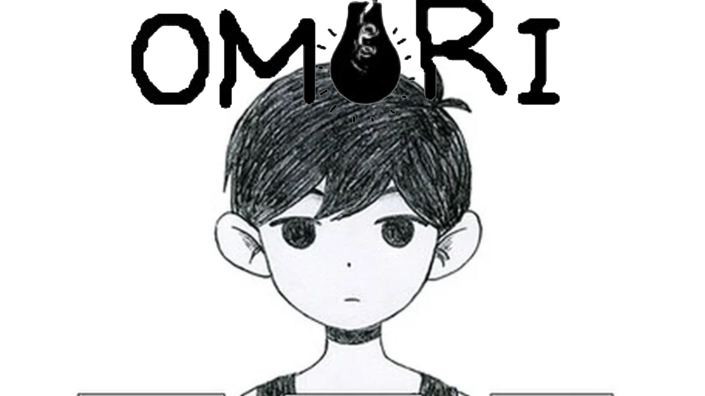
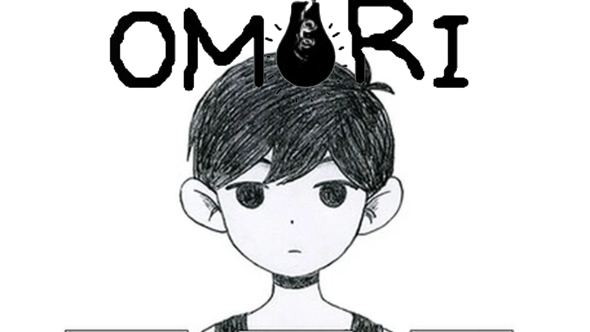

Terror psicológico ou horror psicológico é um subgênero do terror, no qual o medo é gerado a partir da vulnerabilidade da mente
humana a alguma situação ou sensação que causa um desconforto mental, tendo como foco representar estados mentais, emocionais
psicológicos para assustar, perturbar e/ou desestabilizar seu público. Se diferenciando do terror padrão, onde o medo normalmente
é acompanhado do nojo ou da repulsa ao sangue e à violência.
O subgênero frequentemente se sobrepõe ao suspense psicológico, e muitas vezes usa elementos de mistério e personagens com estados
psicológicos instáveis, não confiáveis ou perturbados para aumentar o suspense, drama, ação e paranoia do cenário e da trama e
fornecer uma atmosfera geral desagradável, inquietante ou angustiante.
Para representar o tema, foi escolhido 4 jogos de Terror Psicológico, clicando em um dos jogos ao lado você podera ver mais a fundo sobre o jogo como a história dele, personagens e muito mais.